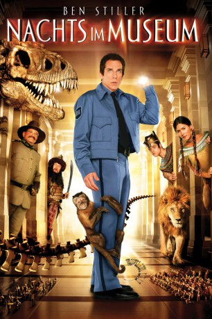

#199 Nachts im Museum 1
Alternativ: Night at the Museum
 
 IMDB-Wertung: 6.4 / 10
IMDB-Wertung: 6.4 / 10  Metascore: 48
Metascore: 48 
Als der glücklose Tagträumer Larry Daley einen Job als Nachwächter im naturhistorischen Museum annimmt, graust es ihm vor der todlangweiligen Aufgabe. Eines Tages entwickeln die Exponate jedoch ein Eigenleben und so muss er sich unter anderem mit Attila dem Hunnen, wilden Neandertalern und dem blutrünstigen T-Rex herumschlagen. Um das um sich greifende Chaos einzudämmen, holt er sich schließlich bei der Wachsfigur von Präsident Theodore Roosevelt Rat.
Jahr: 2006
Dauer: 108 Minuten
FSK: 6
Land: USA Studio: 20th Century FoxTonspuren:
Untertitel:
Auflösung: 720p (1280×688) Größe: 2990 MB
Genre: Abenteuer, Komödie, Familie, Fantasy
Regisseur: Shawn Levy
Drehbuch: Robert Ben Garant, Thomas Lennon, Robert Ben Garant, Thomas Lennon, Milan Trenc
Soundtrack: Alan Silvestri
Darsteller:
Datei: X:\3-Trilogie(N-Z)\Nachts im Museum\Nachts im Museum 1 (2006, FSK6, 1280x688).mkv seit 14.02.2015
Festplatte: HD Collection-3(N-Z)-6(A-Z)
 Alle Filme aus Gruppe '3-Trilogie(N-Z)\Nachts im Museum'
Alle Filme aus Gruppe '3-Trilogie(N-Z)\Nachts im Museum'